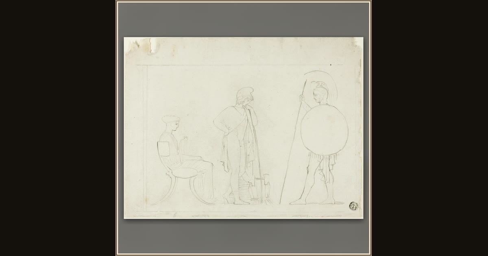

Hector Chiding Paris
John Flaxman, II · n.d. · Art Institute of Chicago
Hector finds Paris with his arms while Helen sits nearby, then rebukes him (6.321–325). Flaxman puts their meeting indoors. Explore its place in Homer's Iliad, Book VI, line 325.